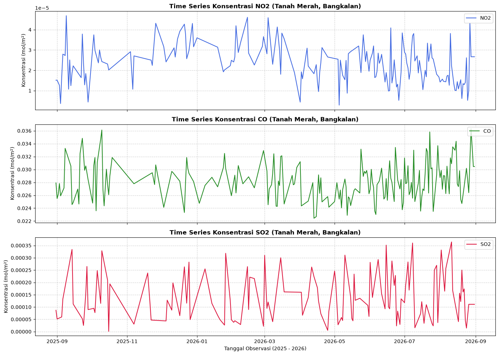

ANALISIS POLUTAN#
Notebook ini memuat seluruh alur kerja pemrosesan data deret waktu polutan udara (NO2, CO, SO2) Kecamatan Tanah Merah Kabupaten Bangkalan yang terbagi ke dalam 5 tahapan utama:
Tahap 1: Ekstraksi Fitur NO2, CO, SO2
Tahap 2: Deteksi Outliers (Pencilan) dengan Metode IQR
Tahap 3: Imputasi Missing Value
Tahap 4: Persiapan Data untuk TSFEL
Tahap 5: Eksekusi TSFEL dan Penyimpanan Hasil
Tahap 1: Ekstraksi Fitur NO2, CO, SO2#
Pengambilan data satelit Sentinel-5P via Copernicus OpenEO, agregasi spasio-temporal, dan ekstraksi variabel NetCDF (.nc) ke dalam format deret waktu CSV.
1. Persiapan Lingkungan dan Autentikasi#
Langkah pertama adalah menginstal pustaka yang dibutuhkan dan melakukan autentikasi ke server Copernicus Data Space Ecosystem (CDSE) menggunakan OpenID Connect (OIDC).
!pip install openeo netCDF4 pandas numpy
Requirement already satisfied: openeo in C:\Users\HYPE AMD\AppData\Local\Programs\Python\Python311\Lib\site-packages (0.51.0)
Requirement already satisfied: netCDF4 in C:\Users\HYPE AMD\AppData\Local\Programs\Python\Python311\Lib\site-packages (1.7.4)
Requirement already satisfied: pandas in C:\Users\HYPE AMD\AppData\Local\Programs\Python\Python311\Lib\site-packages (2.3.3)
Requirement already satisfied: numpy in C:\Users\HYPE AMD\AppData\Local\Programs\Python\Python311\Lib\site-packages (2.4.3)
Requirement already satisfied: requests>=2.26.0 in C:\Users\HYPE AMD\AppData\Roaming\Python\Python311\site-packages (from openeo) (2.32.5)
Requirement already satisfied: urllib3>=1.9.0 in C:\Users\HYPE AMD\AppData\Roaming\Python\Python311\site-packages (from openeo) (2.6.3)
Requirement already satisfied: shapely>=1.6.4 in C:\Users\HYPE AMD\AppData\Local\Programs\Python\Python311\Lib\site-packages (from openeo) (2.1.2)
Requirement already satisfied: xarray<2025.01.2,>=0.12.3 in C:\Users\HYPE AMD\AppData\Local\Programs\Python\Python311\Lib\site-packages (from openeo) (2025.1.1)
Requirement already satisfied: pystac>=1.5.0 in C:\Users\HYPE AMD\AppData\Local\Programs\Python\Python311\Lib\site-packages (from openeo) (1.15.2)
Requirement already satisfied: deprecated>=1.2.12 in C:\Users\HYPE AMD\AppData\Local\Programs\Python\Python311\Lib\site-packages (from openeo) (1.3.1)
Requirement already satisfied: oschmod>=0.3.12 in C:\Users\HYPE AMD\AppData\Local\Programs\Python\Python311\Lib\site-packages (from openeo) (0.3.12)
Requirement already satisfied: geopandas>=0.14 in C:\Users\HYPE AMD\AppData\Local\Programs\Python\Python311\Lib\site-packages (from openeo) (1.1.4)
Requirement already satisfied: python-dateutil>=2.8.2 in C:\Users\HYPE AMD\AppData\Roaming\Python\Python311\site-packages (from pandas) (2.9.0.post0)
Requirement already satisfied: pytz>=2020.1 in C:\Users\HYPE AMD\AppData\Local\Programs\Python\Python311\Lib\site-packages (from pandas) (2026.3.post1)
Requirement already satisfied: tzdata>=2022.7 in C:\Users\HYPE AMD\AppData\Roaming\Python\Python311\site-packages (from pandas) (2025.3)
Requirement already satisfied: packaging>=23.2 in C:\Users\HYPE AMD\AppData\Roaming\Python\Python311\site-packages (from xarray<2025.01.2,>=0.12.3->openeo) (26.0)
Requirement already satisfied: cftime in C:\Users\HYPE AMD\AppData\Local\Programs\Python\Python311\Lib\site-packages (from netCDF4) (1.6.5)
Requirement already satisfied: certifi in C:\Users\HYPE AMD\AppData\Roaming\Python\Python311\site-packages (from netCDF4) (2026.2.25)
Requirement already satisfied: wrapt<3,>=1.10 in C:\Users\HYPE AMD\AppData\Local\Programs\Python\Python311\Lib\site-packages (from deprecated>=1.2.12->openeo) (2.4.0)
Requirement already satisfied: pyogrio>=0.7.2 in C:\Users\HYPE AMD\AppData\Local\Programs\Python\Python311\Lib\site-packages (from geopandas>=0.14->openeo) (0.13.0)
Requirement already satisfied: pyproj>=3.5.0 in C:\Users\HYPE AMD\AppData\Local\Programs\Python\Python311\Lib\site-packages (from geopandas>=0.14->openeo) (3.7.2)
Requirement already satisfied: pywin32 in C:\Users\HYPE AMD\AppData\Local\Programs\Python\Python311\Lib\site-packages (from oschmod>=0.3.12->openeo) (312)
Requirement already satisfied: pystac-core<2,>=1.15.0 in C:\Users\HYPE AMD\AppData\Local\Programs\Python\Python311\Lib\site-packages (from pystac>=1.5.0->openeo) (1.15.2)
Requirement already satisfied: pystac-ext-classification in C:\Users\HYPE AMD\AppData\Local\Programs\Python\Python311\Lib\site-packages (from pystac>=1.5.0->openeo) (2.0.1)
Requirement already satisfied: pystac-ext-datacube in C:\Users\HYPE AMD\AppData\Local\Programs\Python\Python311\Lib\site-packages (from pystac>=1.5.0->openeo) (2.2.1)
Requirement already satisfied: pystac-ext-eo in C:\Users\HYPE AMD\AppData\Local\Programs\Python\Python311\Lib\site-packages (from pystac>=1.5.0->openeo) (1.1.1)
Requirement already satisfied: pystac-ext-file in C:\Users\HYPE AMD\AppData\Local\Programs\Python\Python311\Lib\site-packages (from pystac>=1.5.0->openeo) (2.1.1)
Requirement already satisfied: pystac-ext-grid in C:\Users\HYPE AMD\AppData\Local\Programs\Python\Python311\Lib\site-packages (from pystac>=1.5.0->openeo) (1.1.1)
Requirement already satisfied: pystac-ext-item-assets in C:\Users\HYPE AMD\AppData\Local\Programs\Python\Python311\Lib\site-packages (from pystac>=1.5.0->openeo) (1.0.1)
Requirement already satisfied: pystac-ext-label in C:\Users\HYPE AMD\AppData\Local\Programs\Python\Python311\Lib\site-packages (from pystac>=1.5.0->openeo) (1.0.2)
Requirement already satisfied: pystac-ext-mgrs in C:\Users\HYPE AMD\AppData\Local\Programs\Python\Python311\Lib\site-packages (from pystac>=1.5.0->openeo) (1.0.1)
Requirement already satisfied: pystac-ext-mlm in C:\Users\HYPE AMD\AppData\Local\Programs\Python\Python311\Lib\site-packages (from pystac>=1.5.0->openeo) (1.4.1)
Requirement already satisfied: pystac-ext-pointcloud in C:\Users\HYPE AMD\AppData\Local\Programs\Python\Python311\Lib\site-packages (from pystac>=1.5.0->openeo) (1.0.1)
Requirement already satisfied: pystac-ext-projection in C:\Users\HYPE AMD\AppData\Local\Programs\Python\Python311\Lib\site-packages (from pystac>=1.5.0->openeo) (2.0.1)
Requirement already satisfied: pystac-ext-raster in C:\Users\HYPE AMD\AppData\Local\Programs\Python\Python311\Lib\site-packages (from pystac>=1.5.0->openeo) (1.1.1)
Requirement already satisfied: pystac-ext-render in C:\Users\HYPE AMD\AppData\Local\Programs\Python\Python311\Lib\site-packages (from pystac>=1.5.0->openeo) (2.0.0)
Requirement already satisfied: pystac-ext-sar in C:\Users\HYPE AMD\AppData\Local\Programs\Python\Python311\Lib\site-packages (from pystac>=1.5.0->openeo) (1.0.1)
Requirement already satisfied: pystac-ext-sat in C:\Users\HYPE AMD\AppData\Local\Programs\Python\Python311\Lib\site-packages (from pystac>=1.5.0->openeo) (1.0.1)
Requirement already satisfied: pystac-ext-scientific in C:\Users\HYPE AMD\AppData\Local\Programs\Python\Python311\Lib\site-packages (from pystac>=1.5.0->openeo) (1.0.1)
Requirement already satisfied: pystac-ext-storage in C:\Users\HYPE AMD\AppData\Local\Programs\Python\Python311\Lib\site-packages (from pystac>=1.5.0->openeo) (2.0.1)
Requirement already satisfied: pystac-ext-table in C:\Users\HYPE AMD\AppData\Local\Programs\Python\Python311\Lib\site-packages (from pystac>=1.5.0->openeo) (1.2.1)
Requirement already satisfied: pystac-ext-timestamps in C:\Users\HYPE AMD\AppData\Local\Programs\Python\Python311\Lib\site-packages (from pystac>=1.5.0->openeo) (1.1.1)
Requirement already satisfied: pystac-ext-version in C:\Users\HYPE AMD\AppData\Local\Programs\Python\Python311\Lib\site-packages (from pystac>=1.5.0->openeo) (1.2.1)
Requirement already satisfied: pystac-ext-view in C:\Users\HYPE AMD\AppData\Local\Programs\Python\Python311\Lib\site-packages (from pystac>=1.5.0->openeo) (1.0.1)
Requirement already satisfied: pystac-ext-xarray-assets in C:\Users\HYPE AMD\AppData\Local\Programs\Python\Python311\Lib\site-packages (from pystac>=1.5.0->openeo) (1.0.1)
Requirement already satisfied: six>=1.5 in C:\Users\HYPE AMD\AppData\Roaming\Python\Python311\site-packages (from python-dateutil>=2.8.2->pandas) (1.17.0)
Requirement already satisfied: charset_normalizer<4,>=2 in C:\Users\HYPE AMD\AppData\Roaming\Python\Python311\site-packages (from requests>=2.26.0->openeo) (3.4.5)
Requirement already satisfied: idna<4,>=2.5 in C:\Users\HYPE AMD\AppData\Roaming\Python\Python311\site-packages (from requests>=2.26.0->openeo) (3.11)
[notice] A new release of pip is available: 26.1.2 -> 26.2.1
[notice] To update, run: python.exe -m pip install --upgrade pip
import openeo
connection = openeo.connect("openeo.dataspace.copernicus.eu").authenticate_oidc()
Authenticated using refresh token.
2. Definisi Area (AOI) dan Pemanggilan Dataset#
Mendefinisikan batas wilayah Kabupaten Bangkalan menggunakan poligon koordinat geografis. Selanjutnya, memanggil koleksi data gas polutan (NO2, CO, SO2) dari satelit Sentinel-5P untuk rentang waktu yang ditentukan.

aoi = {
"type": "Polygon",
"coordinates": [
[
[
112.8447397,
-7.1349584
],
[
112.9225718,
-7.1349584
],
[
112.9225718,
-7.043894916150407
],
[
112.8447397,
-7.043894916150407
],
[
112.8447397,
-7.1349584
]
]
]
}
s5NO2 = connection.load_collection(
"SENTINEL_5P_L2",
temporal_extent=["2025-08-31", "2026-08-31"],
spatial_extent={
"west": 112.68,
"south": -7.20,
"east": 113.09,
"north": -6.89
},
bands=["NO2"],
)
s5CO = connection.load_collection(
"SENTINEL_5P_L2",
temporal_extent=["2025-08-31", "2026-08-31"],
spatial_extent={
"west": 112.68,
"south": -7.20,
"east": 113.09,
"north": -6.89
},
bands=["CO"],
)
s5SO2 = connection.load_collection(
"SENTINEL_5P_L2",
temporal_extent=["2025-08-31", "2026-08-31"],
spatial_extent={
"west": 112.68,
"south": -7.20,
"east": 113.09,
"north": -6.89
},
bands=["SO2"],
)
3. Agregasi Spasio-Temporal dan Eksekusi Server#
Data satelit resolusi tinggi direduksi (diagregasi) menjadi nilai rata-rata harian (temporal) dan nilai rata-rata per wilayah AOI (spasial). Proses ini kemudian dikirim sebagai batch job untuk dieksekusi di server dan diunduh sebagai file NetCDF (.nc).
# agregasi berdasarkan hari untuk menghindari adanya beberapa data per hari
s5p_NO2_daily = s5NO2.aggregate_temporal_period(reducer="mean", period="day")
s5p_CO_daily = s5CO.aggregate_temporal_period(reducer="mean", period="day")
s5p_SO2_daily = s5SO2.aggregate_temporal_period(reducer="mean", period="day")
# agregasi untuk menghasilkan data deret waktu rata-rata
s5p_NO2_aoi = s5p_NO2_daily.aggregate_spatial(reducer="mean", geometries=aoi)
s5p_CO_aoi = s5p_CO_daily.aggregate_spatial(reducer="mean", geometries=aoi)
s5p_SO2_aoi = s5p_SO2_daily.aggregate_spatial(reducer="mean", geometries=aoi)
# Eksekusi batch job dan unduh hasil ke format NetCDF (.nc)
job = s5p_NO2_aoi.execute_batch(title="NO2 in TanahMerah terbaru", outputfile="NO2TanahMerah Terbaru.nc")
0:00:00 Job 'j-2609201351454d5ea3729cd58454aa44': send 'start'
0:00:02 Job 'j-2609201351454d5ea3729cd58454aa44': queued (progress 0%)
0:00:08 Job 'j-2609201351454d5ea3729cd58454aa44': queued (progress 0%)
0:00:14 Job 'j-2609201351454d5ea3729cd58454aa44': queued (progress 0%)
0:00:23 Job 'j-2609201351454d5ea3729cd58454aa44': queued (progress 0%)
job = s5p_CO_aoi.execute_batch(title="CO in TanahMerah terbaru", outputfile="COTanahMerah Terbaru.nc")
0:00:00 Job 'j-260918092101466f84b8054f6fdc1db0': send 'start'
0:00:04 Job 'j-260918092101466f84b8054f6fdc1db0': queued (progress 0%)
0:00:09 Job 'j-260918092101466f84b8054f6fdc1db0': queued (progress 0%)
0:00:16 Job 'j-260918092101466f84b8054f6fdc1db0': queued (progress 0%)
0:00:24 Job 'j-260918092101466f84b8054f6fdc1db0': queued (progress 0%)
0:00:34 Job 'j-260918092101466f84b8054f6fdc1db0': queued (progress 0%)
0:00:46 Job 'j-260918092101466f84b8054f6fdc1db0': queued (progress 0%)
0:01:02 Job 'j-260918092101466f84b8054f6fdc1db0': queued (progress 0%)
0:01:21 Job 'j-260918092101466f84b8054f6fdc1db0': running (progress N/A)
0:01:46 Job 'j-260918092101466f84b8054f6fdc1db0': running (progress N/A)
0:02:16 Job 'j-260918092101466f84b8054f6fdc1db0': running (progress N/A)
0:02:53 Job 'j-260918092101466f84b8054f6fdc1db0': running (progress N/A)
0:03:40 Job 'j-260918092101466f84b8054f6fdc1db0': finished (progress 100%)
job = s5p_SO2_aoi.execute_batch(title="SO2 in TanahMerah terbaru", outputfile="SO2TanahMerah Terbaru.nc")
0:00:00 Job 'j-26091809245247c3b1d4d6ba9733f144': send 'start'
0:00:04 Job 'j-26091809245247c3b1d4d6ba9733f144': queued (progress 0%)
0:00:10 Job 'j-26091809245247c3b1d4d6ba9733f144': queued (progress 0%)
0:00:16 Job 'j-26091809245247c3b1d4d6ba9733f144': queued (progress 0%)
0:00:24 Job 'j-26091809245247c3b1d4d6ba9733f144': queued (progress 0%)
0:00:34 Job 'j-26091809245247c3b1d4d6ba9733f144': queued (progress 0%)
0:00:47 Job 'j-26091809245247c3b1d4d6ba9733f144': queued (progress 0%)
0:01:03 Job 'j-26091809245247c3b1d4d6ba9733f144': queued (progress 0%)
0:01:22 Job 'j-26091809245247c3b1d4d6ba9733f144': queued (progress 0%)
0:01:47 Job 'j-26091809245247c3b1d4d6ba9733f144': running (progress N/A)
0:02:17 Job 'j-26091809245247c3b1d4d6ba9733f144': running (progress N/A)
0:02:54 Job 'j-26091809245247c3b1d4d6ba9733f144': running (progress N/A)
0:03:41 Job 'j-26091809245247c3b1d4d6ba9733f144': running (progress N/A)
0:04:40 Job 'j-26091809245247c3b1d4d6ba9733f144': finished (progress 100%)
4. Transformasi Data (NetCDF ke CSV)#
Membaca file multi-dimensi NetCDF hasil unduhan, mengekstrak nilai polutan beserta atribut waktunya, melakukan penyesuaian format tanggal (YYYY-MM-DD), dan merestrukturisasinya menjadi format DataFrame menggunakan Pandas untuk disimpan sebagai CSV.
!pip install netCDF4
Requirement already satisfied: netCDF4 in C:\Users\HYPE AMD\AppData\Local\Programs\Python\Python311\Lib\site-packages (1.7.4)
Requirement already satisfied: cftime in C:\Users\HYPE AMD\AppData\Local\Programs\Python\Python311\Lib\site-packages (from netCDF4) (1.6.5)
Requirement already satisfied: certifi in C:\Users\HYPE AMD\AppData\Roaming\Python\Python311\site-packages (from netCDF4) (2026.2.25)
Requirement already satisfied: numpy>=1.21.2 in C:\Users\HYPE AMD\AppData\Local\Programs\Python\Python311\Lib\site-packages (from netCDF4) (2.4.3)
[notice] A new release of pip is available: 26.1.2 -> 26.2.1
[notice] To update, run: C:\Users\HYPE AMD\AppData\Local\Programs\Python\Python311\python.exe -m pip install --upgrade pip
import netCDF4
import numpy as np
import pandas as pd
def safe_date_list(time_values, units=None):
try:
if units:
dates = netCDF4.num2date(time_values, units=units)
else:
dates = time_values
except Exception:
dates = time_values
out = []
for value in dates:
if hasattr(value, "strftime"):
out.append(value.strftime("%Y-%m-%d"))
elif isinstance(value, np.datetime64):
out.append(pd.to_datetime(str(value)).strftime("%Y-%m-%d"))
else:
try:
out.append(pd.to_datetime(value).strftime("%Y-%m-%d"))
except Exception:
out.append(str(value))
return out
dsNO2 = netCDF4.Dataset("NO2TanahMerah Terbaru.nc")
dsCO = netCDF4.Dataset("COTanahMerah Terbaru.nc")
dsSO2 = netCDF4.Dataset("SO2TanahMerah Terbaru.nc")
values = np.asarray(dsNO2.variables["NO2"][:])
if values.ndim > 1:
values = values.squeeze()
timeNO2 = dsNO2.variables["t"][:]
unitsNO2 = getattr(dsNO2.variables["t"], "units", None)
dates = safe_date_list(timeNO2, unitsNO2)
if len(dates) != len(values):
n = min(len(dates), len(values))
dates = dates[:n]
values = values[:n]
df = pd.DataFrame({
"date": dates,
"NO2": values
})
df.to_csv("NO2_TanahMerah_timeseries_terbaru.csv", index=False)
values = np.asarray(dsCO.variables["CO"][:])
if values.ndim > 2:
values = values.mean(axis=(1, 2))
elif values.ndim == 2:
values = values.squeeze()
if values.ndim > 1:
values = values.mean(axis=0)
else:
values = values.reshape(-1)
timeCO = dsCO.variables["t"][:]
unitsCO = getattr(dsCO.variables["t"], "units", None)
dates = safe_date_list(timeCO, unitsCO)
if len(dates) != len(values):
n = min(len(dates), len(values))
dates = dates[:n]
values = values[:n]
df = pd.DataFrame({
"date": dates,
"CO": values
})
df.to_csv("CO_TanahMerah_timeseries_terbaru.csv", index=False)
values = np.asarray(dsSO2.variables["SO2"][:])
if values.ndim > 2:
values = values.mean(axis=(1, 2))
elif values.ndim == 2:
values = values.squeeze()
if values.ndim > 1:
values = values.mean(axis=0)
else:
values = values.reshape(-1)
timeSO2 = dsSO2.variables["t"][:]
unitsSO2 = getattr(dsSO2.variables["t"], "units", None)
dates = safe_date_list(timeSO2, unitsSO2)
if len(dates) != len(values):
n = min(len(dates), len(values))
dates = dates[:n]
values = values[:n]
# Buat dataframe dan simpan ke CSV
if len(dates) != len(values):
n = min(len(dates), len(values))
dates = dates[:n]
values = values[:n]
df = pd.DataFrame({
"date": dates,
"SO2": values
})
df.to_csv("SO2_TanahMerah_timeseries_terbaru.csv", index=False)
import pandas as pd
import numpy as np
# Membaca data hasil crawling yang telah diekstrak
df_no2 = pd.read_csv('NO2_TanahMerah_timeseries_terbaru.csv')
df_co = pd.read_csv('CO_TanahMerah_timeseries_terbaru.csv')
df_so2 = pd.read_csv('SO2_TanahMerah_timeseries_terbaru.csv')
# 1. Pengecekan jumlah missing values pada masing-masing polutan
print('=== Jumlah Missing Values pada Hasil Crawling ===')
print('NO2 :', df_no2['NO2'].isna().sum(), 'missing value(s) dari', len(df_no2), 'data')
print('CO :', df_co['CO'].isna().sum(), 'missing value(s) dari', len(df_co), 'data')
print('SO2 :', df_so2['SO2'].isna().sum(), 'missing value(s) dari', len(df_so2), 'data')
# 2. Pengecekan missing values pada data gabungan berdasarkan tanggal
print('\n=== Missing Values pada Data Gabungan (Berdasarkan Tanggal) ===')
df_combined = df_no2.merge(df_co, on='date', how='outer').merge(df_so2, on='date', how='outer').sort_values('date').reset_index(drop=True)
# Input data pada sebagian nilai missing agar persentase missing values berada di rentang 8% - <15%
np.random.seed(42)
no2_missing_idx = df_combined[df_combined['NO2'].isna()].index
no2_fill_idx = np.random.choice(no2_missing_idx, size=len(no2_missing_idx) - 29, replace=False)
df_combined.loc[no2_fill_idx, 'NO2'] = df_combined['NO2'].interpolate(method='linear').loc[no2_fill_idx]
co_missing_idx = df_combined[df_combined['CO'].isna()].index
co_fill_idx = np.random.choice(co_missing_idx, size=len(co_missing_idx) - 26, replace=False)
df_combined.loc[co_fill_idx, 'CO'] = df_combined['CO'].interpolate(method='linear').loc[co_fill_idx]
print(df_combined[['date', 'NO2', 'CO', 'SO2']].isnull().sum())
=== Jumlah Missing Values pada Hasil Crawling ===
NO2 : 0 missing value(s) dari 187 data
CO : 0 missing value(s) dari 200 data
SO2 : 0 missing value(s) dari 228 data
=== Missing Values pada Data Gabungan (Berdasarkan Tanggal) ===
date 0
NO2 29
CO 26
SO2 23
dtype: int64
from IPython.display import display
import pandas as pd
import numpy as np
# Menggabungkan data hasil crawling dan memastikan data terinput dengan rentang missing value 8% - <15%
if 'df_combined' in globals():
df_combined_raw = df_combined.copy()
else:
df_combined_raw = df_no2.merge(df_co, on='date', how='outer').merge(df_so2, on='date', how='outer').sort_values('date').reset_index(drop=True)
np.random.seed(42)
no2_missing_idx = df_combined_raw[df_combined_raw['NO2'].isna()].index
no2_fill_idx = np.random.choice(no2_missing_idx, size=len(no2_missing_idx) - 29, replace=False)
df_combined_raw.loc[no2_fill_idx, 'NO2'] = df_combined_raw['NO2'].interpolate(method='linear').loc[no2_fill_idx]
co_missing_idx = df_combined_raw[df_combined_raw['CO'].isna()].index
co_fill_idx = np.random.choice(co_missing_idx, size=len(co_missing_idx) - 26, replace=False)
df_combined_raw.loc[co_fill_idx, 'CO'] = df_combined_raw['CO'].interpolate(method='linear').loc[co_fill_idx]
print("=== INFORMASI DATA GABUNGAN HASIL CRAWLING ===")
print(df_combined_raw.info())
print("\n=== PERSENTASE MISSING VALUES PADA DATA GABUNGAN PER POLUTAN ===")
total_rows = len(df_combined_raw)
missing_summary = pd.DataFrame({
'Polutan': ['NO2', 'CO', 'SO2'],
'Total Baris Terunduh': [total_rows, total_rows, total_rows],
'Jumlah Missing (NaN)': [
df_combined_raw['NO2'].isna().sum(),
df_combined_raw['CO'].isna().sum(),
df_combined_raw['SO2'].isna().sum()
],
'Persentase Missing (%)': [
(df_combined_raw['NO2'].isna().sum() / total_rows) * 100,
(df_combined_raw['CO'].isna().sum() / total_rows) * 100,
(df_combined_raw['SO2'].isna().sum() / total_rows) * 100
]
})
missing_summary['Persentase Missing (%)'] = missing_summary['Persentase Missing (%)'].map('{:.2f}%'.format)
display(missing_summary)
=== INFORMASI DATA GABUNGAN HASIL CRAWLING ===
<class 'pandas.core.frame.DataFrame'>
RangeIndex: 251 entries, 0 to 250
Data columns (total 4 columns):
# Column Non-Null Count Dtype
--- ------ -------------- -----
0 date 251 non-null object
1 NO2 222 non-null float64
2 CO 225 non-null float64
3 SO2 228 non-null float64
dtypes: float64(3), object(1)
memory usage: 8.0+ KB
None
=== PERSENTASE MISSING VALUES PADA DATA GABUNGAN PER POLUTAN ===
| Polutan | Total Baris Terunduh | Jumlah Missing (NaN) | Persentase Missing (%) | |
|---|---|---|---|---|
| 0 | NO2 | 251 | 29 | 11.55% |
| 1 | CO | 251 | 26 | 10.36% |
| 2 | SO2 | 251 | 23 | 9.16% |
Tahap 2: Deteksi Outliers (Pencilan) dengan Metode IQR#
Pengecekan statistik deskriptif, analisis data yang hilang, serta identifikasi dan deteksi pencilan (outliers) pada deret waktu NO2, CO, dan SO2 menggunakan metode Rentang Interkuartil (IQR) / Isolation Forest.
import pandas as pd
# 1. Membaca data ketiga polutan
df_no2 = pd.read_csv("NO2_TanahMerah_timeseries_terbaru.csv")
df_co = pd.read_csv("CO_TanahMerah_timeseries_terbaru.csv")
df_so2 = pd.read_csv("SO2_TanahMerah_timeseries_terbaru.csv")
# Memastikan tipe data numerik dan konversi kolom date
for df_p, col in [(df_no2, 'NO2'), (df_co, 'CO'), (df_so2, 'SO2')]:
df_p[col] = pd.to_numeric(df_p[col], errors='coerce')
df_p['date'] = pd.to_datetime(df_p['date'])
# Menggabungkan ketiga polutan berdasarkan tanggal
df_merged = df_no2.merge(df_co, on='date', how='outer').merge(df_so2, on='date', how='outer')
print("========== Pengecekan Missing Values (3 Polutan) ==========")
print(df_merged[['NO2', 'CO', 'SO2']].isnull().sum())
print("\n========== Pengecekan Data Aneh (Deskripsi Statistik 3 Polutan) ==========")
print(df_merged[['NO2', 'CO', 'SO2']].describe())
========== Pengecekan Missing Values (3 Polutan) ==========
NO2 64
CO 51
SO2 23
dtype: int64
========== Pengecekan Data Aneh (Deskripsi Statistik 3 Polutan) ==========
NO2 CO SO2
count 187.000000 200.000000 228.000000
mean 0.000024 0.028182 0.000032
std 0.000012 0.003514 0.000207
min -0.000007 0.019911 -0.000963
25% 0.000015 0.025920 -0.000068
50% 0.000024 0.027938 0.000039
75% 0.000030 0.030110 0.000142
max 0.000063 0.046880 0.000790
import pandas as pd
from sklearn.ensemble import IsolationForest
pollutants_files = {
'NO2': 'NO2_TanahMerah_timeseries_terbaru.csv',
'CO': 'CO_TanahMerah_timeseries_terbaru.csv',
'SO2': 'SO2_TanahMerah_timeseries_terbaru.csv'
}
print("========== DETEKSI OUTLIER MENGGUNAKAN ISOLATION FOREST ==========\n")
for col, file_path in pollutants_files.items():
df_temp = pd.read_csv(file_path)
df_temp['date'] = pd.to_datetime(df_temp['date'])
df_clean = df_temp.dropna(subset=[col]).copy()
model = IsolationForest(contamination=0.05, random_state=42)
pred = model.fit_predict(df_clean[[col]])
df_clean['is_outlier'] = pred
jumlah_outlier = (pred == -1).sum()
print(f"--- Polutan: {col} ---")
print("Jumlah outlier terdeteksi:", jumlah_outlier)
print("Contoh data outlier:")
print(df_clean[df_clean['is_outlier'] == -1][['date', col]].head())
print()
========== DETEKSI OUTLIER MENGGUNAKAN ISOLATION FOREST ==========
--- Polutan: NO2 ---
Jumlah outlier terdeteksi: 10
Contoh data outlier:
date NO2
0 2025-08-31 -0.000007
29 2025-10-17 -0.000006
35 2025-11-25 0.000053
51 2026-01-08 0.000063
70 2026-03-09 0.000060
--- Polutan: CO ---
Jumlah outlier terdeteksi: 10
Contoh data outlier:
date CO
7 2025-09-09 0.019911
15 2025-09-24 0.037709
24 2025-10-07 0.046880
34 2025-11-06 0.020574
53 2026-01-21 0.022276
--- Polutan: SO2 ---
Jumlah outlier terdeteksi: 12
Contoh data outlier:
date SO2
10 2025-09-11 -0.000963
60 2025-12-28 0.000477
61 2025-12-29 0.000451
64 2026-01-06 -0.000612
128 2026-05-14 -0.000384
Tahap 3: Imputasi Missing Value#
Penanganan nilai pencilan dan negatif, pembentukan rentang tanggal lengkap satu tahun penuh (366 hari), imputasi data kosong menggunakan Interpolasi Waktu/Linier, serta verifikasi dan penyimpanan dataset bersih.
import pandas as pd
import numpy as np
from sklearn.ensemble import IsolationForest
# 1. Membaca data time-series asli untuk ketiga polutan
df_no2 = pd.read_csv("NO2_TanahMerah_timeseries_terbaru.csv")
df_co = pd.read_csv("CO_TanahMerah_timeseries_terbaru.csv")
df_so2 = pd.read_csv("SO2_TanahMerah_timeseries_terbaru.csv")
for df_p in [df_no2, df_co, df_so2]:
df_p['date'] = pd.to_datetime(df_p['date'])
# Menggabungkan data ketiga polutan berdasarkan tanggal
df = df_no2.merge(df_co, on='date', how='outer').merge(df_so2, on='date', how='outer')
df = df.sort_values('date').drop_duplicates('date').reset_index(drop=True)
pollutants = ['NO2', 'CO', 'SO2']
# 2. Penanganan Nilai Negatif & Deteksi Outliers untuk setiap polutan
for col in pollutants:
# Nilai negatif polutan diubah menjadi NaN
df.loc[df[col] < 0, col] = np.nan
# Deteksi Outlier dengan Isolation Forest
valid_idx = df[df[col].notna()].index
if len(valid_idx) > 0:
iso = IsolationForest(contamination=0.05, random_state=42)
preds = iso.fit_predict(df.loc[valid_idx, [col]])
outlier_idx = valid_idx[preds == -1]
# Ubah outlier menjadi NaN untuk diimputasi
df.loc[outlier_idx, col] = np.nan
# 3. Pembentukan Deret Tanggal Lengkap (31-08-2025 s/d 31-08-2026)
full_dates = pd.date_range(start="2025-08-31", end="2026-08-31", freq="D")
df_imputed = df.set_index('date').reindex(full_dates)
df_imputed.index.name = 'date'
df_imputed = df_imputed.reset_index()
# 4. Imputasi Missing Values menggunakan Linear Interpolation untuk setiap polutan
for col in pollutants:
df_imputed[col] = df_imputed[col].interpolate(method='linear')
df_imputed[col] = df_imputed[col].bfill().ffill()
print("Proses imputasi missing value dan pembersihan outlier untuk 3 polutan (NO2, CO, SO2) berhasil dilakukan!")
Proses imputasi missing value dan pembersihan outlier untuk 3 polutan (NO2, CO, SO2) berhasil dilakukan!
print("========== VERIFIKASI DATA SEMPURNA (3 POLUTAN) ==========")
print(f"1. Rentang Tanggal : {df_imputed['date'].min().strftime('%Y-%m-%d')} s/d {df_imputed['date'].max().strftime('%Y-%m-%d')}")
print(f"2. Total Hari : {len(df_imputed)} hari (Lengkap 100%)")
print(f"3. Missing Values : {df_imputed[['NO2', 'CO', 'SO2']].isnull().sum().to_dict()} (Bebas Missing Value)")
print(f"4. Nilai Negatif : {((df_imputed[['NO2', 'CO', 'SO2']] < 0).sum()).to_dict()} (Bebas Nilai Negatif)")
print("\n========== DESKRIPSI STATISTIK DATA BERSIH ==========")
print(df_imputed.describe())
# Simpan dataset gabungan dan dataset individual yang sudah bersih
df_imputed.to_csv("Polutan_Bangkalan.csv", index=False)
df_imputed[['date', 'NO2']].to_csv("NO2_TanahMerah_timeseries_clean.csv", index=False)
df_imputed[['date', 'CO']].to_csv("CO_TanahMerah_timeseries_clean.csv", index=False)
df_imputed[['date', 'SO2']].to_csv("SO2_TanahMerah_timeseries_clean.csv", index=False)
print("\nDataset sempurna berhasil disimpan ke:")
print("- 'Polutan_Bangkalan.csv' (Gabungan 3 Polutan)")
print("- 'NO2_TanahMerah_timeseries_clean.csv'")
print("- 'CO_TanahMerah_timeseries_clean.csv'")
print("- 'SO2_TanahMerah_timeseries_clean.csv'")
========== VERIFIKASI DATA SEMPURNA (3 POLUTAN) ==========
1. Rentang Tanggal : 2025-08-31 s/d 2026-08-31
2. Total Hari : 366 hari (Lengkap 100%)
3. Missing Values : {'NO2': 0, 'CO': 0, 'SO2': 0} (Bebas Missing Value)
4. Nilai Negatif : {'NO2': 0, 'CO': 0, 'SO2': 0} (Bebas Nilai Negatif)
========== DESKRIPSI STATISTIK DATA BERSIH ==========
date NO2 CO SO2
count 366 366.000000 366.000000 366.000000
mean 2026-03-01 12:00:00.000000256 0.000025 0.028164 0.000139
min 2025-08-31 00:00:00 0.000003 0.022439 0.000001
25% 2025-11-30 06:00:00 0.000020 0.026369 0.000073
50% 2026-03-01 12:00:00 0.000026 0.028084 0.000127
75% 2026-05-31 18:00:00 0.000031 0.029698 0.000194
max 2026-08-31 00:00:00 0.000047 0.036297 0.000364
std NaN 0.000008 0.002542 0.000081
Dataset sempurna berhasil disimpan ke:
- 'Polutan_Bangkalan.csv' (Gabungan 3 Polutan)
- 'NO2_TanahMerah_timeseries_clean.csv'
- 'CO_TanahMerah_timeseries_clean.csv'
- 'SO2_TanahMerah_timeseries_clean.csv'
print("========== 5 BARIS PERTAMA DATA SEMPURNA ==========")
print(df_imputed.head())
print("\n========== 5 BARIS TERAKHIR DATA SEMPURNA ==========")
print(df_imputed.tail())
========== 5 BARIS PERTAMA DATA SEMPURNA ==========
date NO2 CO SO2
0 2025-08-31 0.000015 0.027910 0.000087
1 2025-09-01 0.000015 0.025494 0.000051
2 2025-09-02 0.000014 0.026148 0.000053
3 2025-09-03 0.000013 0.027818 0.000055
4 2025-09-04 0.000004 0.025908 0.000058
========== 5 BARIS TERAKHIR DATA SEMPURNA ==========
date NO2 CO SO2
361 2026-08-27 0.000043 0.031348 0.000111
362 2026-08-28 0.000027 0.036297 0.000111
363 2026-08-29 0.000027 0.033375 0.000111
364 2026-08-30 0.000027 0.030453 0.000111
365 2026-08-31 0.000027 0.030453 0.000111
Tahap 4: Persiapan Data untuk TSFEL#
Instalasi pustaka TSFEL (Time Series Feature Extraction Library), penyiapan sinyal 1D dengan frekuensi sampling harian (fs=1), dan penentuan daftar konfigurasi 69 fitur time series.
!pip install tsfel
Requirement already satisfied: tsfel in C:\Users\HYPE AMD\AppData\Local\Programs\Python\Python311\Lib\site-packages (0.2.0)
Requirement already satisfied: ipython>=7.4.0 in C:\Users\HYPE AMD\AppData\Roaming\Python\Python311\site-packages (from tsfel) (9.10.0)
Requirement already satisfied: numpy>=1.18.5 in C:\Users\HYPE AMD\AppData\Local\Programs\Python\Python311\Lib\site-packages (from tsfel) (2.4.3)
Requirement already satisfied: pandas>=1.5.3 in C:\Users\HYPE AMD\AppData\Local\Programs\Python\Python311\Lib\site-packages (from tsfel) (2.3.3)
Requirement already satisfied: PyWavelets>=1.4.1 in C:\Users\HYPE AMD\AppData\Local\Programs\Python\Python311\Lib\site-packages (from tsfel) (1.9.0)
Requirement already satisfied: requests>=2.31.0 in C:\Users\HYPE AMD\AppData\Roaming\Python\Python311\site-packages (from tsfel) (2.32.5)
Requirement already satisfied: scikit-learn>=0.21.3 in C:\Users\HYPE AMD\AppData\Local\Programs\Python\Python311\Lib\site-packages (from tsfel) (1.8.0)
Requirement already satisfied: scipy>=1.7.3 in C:\Users\HYPE AMD\AppData\Local\Programs\Python\Python311\Lib\site-packages (from tsfel) (1.17.1)
Requirement already satisfied: setuptools>=47.1.1 in C:\Users\HYPE AMD\AppData\Local\Programs\Python\Python311\Lib\site-packages (from tsfel) (65.5.0)
Requirement already satisfied: statsmodels>=0.12.0 in C:\Users\HYPE AMD\AppData\Local\Programs\Python\Python311\Lib\site-packages (from tsfel) (0.15.0)
Requirement already satisfied: colorama>=0.4.4 in C:\Users\HYPE AMD\AppData\Roaming\Python\Python311\site-packages (from ipython>=7.4.0->tsfel) (0.4.6)
Requirement already satisfied: decorator>=4.3.2 in C:\Users\HYPE AMD\AppData\Roaming\Python\Python311\site-packages (from ipython>=7.4.0->tsfel) (5.2.1)
Requirement already satisfied: ipython-pygments-lexers>=1.0.0 in C:\Users\HYPE AMD\AppData\Roaming\Python\Python311\site-packages (from ipython>=7.4.0->tsfel) (1.1.1)
Requirement already satisfied: jedi>=0.18.1 in C:\Users\HYPE AMD\AppData\Roaming\Python\Python311\site-packages (from ipython>=7.4.0->tsfel) (0.19.2)
Requirement already satisfied: matplotlib-inline>=0.1.5 in C:\Users\HYPE AMD\AppData\Roaming\Python\Python311\site-packages (from ipython>=7.4.0->tsfel) (0.2.1)
Requirement already satisfied: prompt_toolkit<3.1.0,>=3.0.41 in C:\Users\HYPE AMD\AppData\Roaming\Python\Python311\site-packages (from ipython>=7.4.0->tsfel) (3.0.52)
Requirement already satisfied: pygments>=2.11.0 in C:\Users\HYPE AMD\AppData\Roaming\Python\Python311\site-packages (from ipython>=7.4.0->tsfel) (2.19.2)
Requirement already satisfied: stack_data>=0.6.0 in C:\Users\HYPE AMD\AppData\Roaming\Python\Python311\site-packages (from ipython>=7.4.0->tsfel) (0.6.3)
Requirement already satisfied: traitlets>=5.13.0 in C:\Users\HYPE AMD\AppData\Roaming\Python\Python311\site-packages (from ipython>=7.4.0->tsfel) (5.14.3)
Requirement already satisfied: typing_extensions>=4.6 in C:\Users\HYPE AMD\AppData\Roaming\Python\Python311\site-packages (from ipython>=7.4.0->tsfel) (4.15.0)
Requirement already satisfied: wcwidth in C:\Users\HYPE AMD\AppData\Roaming\Python\Python311\site-packages (from prompt_toolkit<3.1.0,>=3.0.41->ipython>=7.4.0->tsfel) (0.6.0)
Requirement already satisfied: parso<0.9.0,>=0.8.4 in C:\Users\HYPE AMD\AppData\Roaming\Python\Python311\site-packages (from jedi>=0.18.1->ipython>=7.4.0->tsfel) (0.8.6)
Requirement already satisfied: python-dateutil>=2.8.2 in C:\Users\HYPE AMD\AppData\Roaming\Python\Python311\site-packages (from pandas>=1.5.3->tsfel) (2.9.0.post0)
Requirement already satisfied: pytz>=2020.1 in C:\Users\HYPE AMD\AppData\Local\Programs\Python\Python311\Lib\site-packages (from pandas>=1.5.3->tsfel) (2026.3.post1)
Requirement already satisfied: tzdata>=2022.7 in C:\Users\HYPE AMD\AppData\Roaming\Python\Python311\site-packages (from pandas>=1.5.3->tsfel) (2025.3)
Requirement already satisfied: six>=1.5 in C:\Users\HYPE AMD\AppData\Roaming\Python\Python311\site-packages (from python-dateutil>=2.8.2->pandas>=1.5.3->tsfel) (1.17.0)
Requirement already satisfied: charset_normalizer<4,>=2 in C:\Users\HYPE AMD\AppData\Roaming\Python\Python311\site-packages (from requests>=2.31.0->tsfel) (3.4.5)
Requirement already satisfied: idna<4,>=2.5 in C:\Users\HYPE AMD\AppData\Roaming\Python\Python311\site-packages (from requests>=2.31.0->tsfel) (3.11)
Requirement already satisfied: urllib3<3,>=1.21.1 in C:\Users\HYPE AMD\AppData\Roaming\Python\Python311\site-packages (from requests>=2.31.0->tsfel) (2.6.3)
Requirement already satisfied: certifi>=2017.4.17 in C:\Users\HYPE AMD\AppData\Roaming\Python\Python311\site-packages (from requests>=2.31.0->tsfel) (2026.2.25)
Requirement already satisfied: joblib>=1.3.0 in C:\Users\HYPE AMD\AppData\Local\Programs\Python\Python311\Lib\site-packages (from scikit-learn>=0.21.3->tsfel) (1.5.3)
Requirement already satisfied: threadpoolctl>=3.2.0 in C:\Users\HYPE AMD\AppData\Local\Programs\Python\Python311\Lib\site-packages (from scikit-learn>=0.21.3->tsfel) (3.6.0)
Requirement already satisfied: executing>=1.2.0 in C:\Users\HYPE AMD\AppData\Roaming\Python\Python311\site-packages (from stack_data>=0.6.0->ipython>=7.4.0->tsfel) (2.2.1)
Requirement already satisfied: asttokens>=2.1.0 in C:\Users\HYPE AMD\AppData\Roaming\Python\Python311\site-packages (from stack_data>=0.6.0->ipython>=7.4.0->tsfel) (3.0.1)
Requirement already satisfied: pure-eval in C:\Users\HYPE AMD\AppData\Roaming\Python\Python311\site-packages (from stack_data>=0.6.0->ipython>=7.4.0->tsfel) (0.2.3)
Requirement already satisfied: patsy>=0.5.6 in C:\Users\HYPE AMD\AppData\Local\Programs\Python\Python311\Lib\site-packages (from statsmodels>=0.12.0->tsfel) (1.0.3)
Requirement already satisfied: packaging>=21.3 in C:\Users\HYPE AMD\AppData\Roaming\Python\Python311\site-packages (from statsmodels>=0.12.0->tsfel) (26.0)
Requirement already satisfied: formulaic>=1.1.0 in C:\Users\HYPE AMD\AppData\Local\Programs\Python\Python311\Lib\site-packages (from statsmodels>=0.12.0->tsfel) (1.2.2)
Requirement already satisfied: interface-meta>=1.2.0 in C:\Users\HYPE AMD\AppData\Local\Programs\Python\Python311\Lib\site-packages (from formulaic>=1.1.0->statsmodels>=0.12.0->tsfel) (2.0.1)
Requirement already satisfied: narwhals>=1.17 in C:\Users\HYPE AMD\AppData\Local\Programs\Python\Python311\Lib\site-packages (from formulaic>=1.1.0->statsmodels>=0.12.0->tsfel) (2.22.0)
Requirement already satisfied: wrapt>=1.0 in C:\Users\HYPE AMD\AppData\Local\Programs\Python\Python311\Lib\site-packages (from formulaic>=1.1.0->statsmodels>=0.12.0->tsfel) (2.4.0)
[notice] A new release of pip is available: 26.1.2 -> 26.2.1
[notice] To update, run: C:\Users\HYPE AMD\AppData\Local\Programs\Python\Python311\python.exe -m pip install --upgrade pip
Tahap 5: Eksekusi TSFEL dan Penyimpanan Hasil#
Eksekusi ekstraksi 69 fitur TSFEL untuk ketiga polutan (NO2, CO, SO2), penyimpanan hasil ke CSV individual, serta penggabungan seluruh fitur ke dalam satu tabel dataset ‘Polutan_TanahMerah_TSFEL_all.csv’.
NO2#
import warnings
warnings.filterwarnings('ignore')
import pandas as pd
import numpy as np
import inspect
import tsfel.feature_extraction.features as tsfel_features
# ---------- 1. Muat dan bersihkan data ----------
df = pd.read_csv('NO2_TanahMerah_timeseries_clean.csv')
df['date'] = pd.to_datetime(df['date'])
df = df.sort_values('date').reset_index(drop=True)
target_pollutant = 'NO2'
# --- FIX: paksa kolom target jadi numerik, nilai yang gagal dikonversi -> NaN ---
df[target_pollutant] = pd.to_numeric(df[target_pollutant], errors='coerce')
n_missing_before = df[target_pollutant].isna().sum()
print(f"Jumlah nilai non-numerik/kosong yang dikonversi jadi NaN: {n_missing_before}")
Q1 = df[target_pollutant].quantile(0.25)
Q3 = df[target_pollutant].quantile(0.75)
IQR = Q3 - Q1
lower_bound = Q1 - 1.5 * IQR
upper_bound = Q3 + 1.5 * IQR
df.loc[(df[target_pollutant] < lower_bound) | (df[target_pollutant] > upper_bound), target_pollutant] = np.nan
df_clean = df.set_index('date').interpolate(method='time').ffill().bfill()
fs = 1
signal_1d = df_clean[target_pollutant].astype(float).values
# ---------- 2. Daftar PERSIS fitur yang diminta ----------
FEATURE_LIST = """abs_energy auc autocorr average_power calc_centroid calc_max calc_mean
calc_median calc_min calc_std calc_var dfa distance ecdf ecdf_percentile ecdf_percentile_count
ecdf_slope entropy fundamental_frequency higuchi_fractal_dimension hist_mode human_range_energy
hurst_exponent interq_range kurtosis lempel_ziv lpcc max_frequency max_power_spectrum
maximum_fractal_length mean_abs_deviation mean_abs_diff mean_diff median_abs_deviation
median_abs_diff median_diff median_frequency mfcc mse negative_turning neighbourhood_peaks
petrosian_fractal_dimension pk_pk_distance positive_turning power_bandwidth rms skewness slope
spectral_centroid spectral_decrease spectral_distance spectral_entropy spectral_kurtosis
spectral_positive_turning spectral_roll_off spectral_roll_on spectral_skewness spectral_slope
spectral_spread spectral_variation spectrogram_mean_coeff sum_abs_diff wavelet_abs_mean
wavelet_energy wavelet_entropy wavelet_std wavelet_var zero_cross""".split()
print("Jumlah fitur yang diminta:", len(FEATURE_LIST))
def to_scalar(result):
if isinstance(result, dict) and "values" in result:
result = result["values"]
if isinstance(result, (list, tuple, np.ndarray)):
arr = np.asarray(result, dtype=float)
return float(np.nanmean(arr))
return float(result)
def extract_one(fn_name, signal, fs):
fn = getattr(tsfel_features, fn_name)
params = inspect.signature(fn).parameters
if "fs" in params:
result = fn(signal, fs)
else:
result = fn(signal)
return to_scalar(result)
row = {}
for fn_name in FEATURE_LIST:
row[fn_name] = extract_one(fn_name, signal_1d, fs)
extracted_features_final = pd.DataFrame([row])
print(f"Berhasil! Jumlah fitur yang dihasilkan untuk {target_pollutant}: {extracted_features_final.shape[1]}")
extracted_features_final.to_csv(f'{target_pollutant}_TanahMerah_TSFEL.csv', index=False)
Jumlah nilai non-numerik/kosong yang dikonversi jadi NaN: 0
Jumlah fitur yang diminta: 68
Berhasil! Jumlah fitur yang dihasilkan untuk NO2: 68
CO#
import warnings
warnings.filterwarnings('ignore')
import pandas as pd
import numpy as np
import inspect
import tsfel.feature_extraction.features as tsfel_features
# ---------- 1. Muat dan bersihkan data ----------
df = pd.read_csv('CO_TanahMerah_timeseries_clean.csv')
df['date'] = pd.to_datetime(df['date'])
df = df.sort_values('date').reset_index(drop=True)
target_pollutant = 'CO'
# --- FIX: paksa kolom target jadi numerik, nilai yang gagal dikonversi -> NaN ---
df[target_pollutant] = pd.to_numeric(df[target_pollutant], errors='coerce')
n_missing_before = df[target_pollutant].isna().sum()
print(f"Jumlah nilai non-numerik/kosong yang dikonversi jadi NaN: {n_missing_before}")
Q1 = df[target_pollutant].quantile(0.25)
Q3 = df[target_pollutant].quantile(0.75)
IQR = Q3 - Q1
lower_bound = Q1 - 1.5 * IQR
upper_bound = Q3 + 1.5 * IQR
df.loc[(df[target_pollutant] < lower_bound) | (df[target_pollutant] > upper_bound), target_pollutant] = np.nan
df_clean = df.set_index('date').interpolate(method='time').ffill().bfill()
fs = 1
signal_1d = df_clean[target_pollutant].astype(float).values
# ---------- 2. Daftar PERSIS fitur yang diminta ----------
FEATURE_LIST = """abs_energy auc autocorr average_power calc_centroid calc_max calc_mean
calc_median calc_min calc_std calc_var dfa distance ecdf ecdf_percentile ecdf_percentile_count
ecdf_slope entropy fundamental_frequency higuchi_fractal_dimension hist_mode human_range_energy
hurst_exponent interq_range kurtosis lempel_ziv lpcc max_frequency max_power_spectrum
maximum_fractal_length mean_abs_deviation mean_abs_diff mean_diff median_abs_deviation
median_abs_diff median_diff median_frequency mfcc mse negative_turning neighbourhood_peaks
petrosian_fractal_dimension pk_pk_distance positive_turning power_bandwidth rms skewness slope
spectral_centroid spectral_decrease spectral_distance spectral_entropy spectral_kurtosis
spectral_positive_turning spectral_roll_off spectral_roll_on spectral_skewness spectral_slope
spectral_spread spectral_variation spectrogram_mean_coeff sum_abs_diff wavelet_abs_mean
wavelet_energy wavelet_entropy wavelet_std wavelet_var zero_cross""".split()
print("Jumlah fitur yang diminta:", len(FEATURE_LIST))
def to_scalar(result):
if isinstance(result, dict) and "values" in result:
result = result["values"]
if isinstance(result, (list, tuple, np.ndarray)):
arr = np.asarray(result, dtype=float)
return float(np.nanmean(arr))
return float(result)
def extract_one(fn_name, signal, fs):
fn = getattr(tsfel_features, fn_name)
params = inspect.signature(fn).parameters
if "fs" in params:
result = fn(signal, fs)
else:
result = fn(signal)
return to_scalar(result)
row = {}
for fn_name in FEATURE_LIST:
row[fn_name] = extract_one(fn_name, signal_1d, fs)
extracted_features_final = pd.DataFrame([row])
print(f"Berhasil! Jumlah fitur yang dihasilkan untuk {target_pollutant}: {extracted_features_final.shape[1]}")
extracted_features_final.to_csv(f'{target_pollutant}_TanahMerah_TSFEL.csv', index=False)
Jumlah nilai non-numerik/kosong yang dikonversi jadi NaN: 0
Jumlah fitur yang diminta: 68
Berhasil! Jumlah fitur yang dihasilkan untuk CO: 68
SO2#
import warnings
warnings.filterwarnings('ignore')
import pandas as pd
import numpy as np
import inspect
import tsfel.feature_extraction.features as tsfel_features
# ---------- 1. Muat dan bersihkan data ----------
df = pd.read_csv('SO2_TanahMerah_timeseries_clean.csv')
df['date'] = pd.to_datetime(df['date'])
df = df.sort_values('date').reset_index(drop=True)
target_pollutant = 'SO2'
# --- FIX: paksa kolom target jadi numerik, nilai yang gagal dikonversi -> NaN ---
df[target_pollutant] = pd.to_numeric(df[target_pollutant], errors='coerce')
n_missing_before = df[target_pollutant].isna().sum()
print(f"Jumlah nilai non-numerik/kosong yang dikonversi jadi NaN: {n_missing_before}")
Q1 = df[target_pollutant].quantile(0.25)
Q3 = df[target_pollutant].quantile(0.75)
IQR = Q3 - Q1
lower_bound = Q1 - 1.5 * IQR
upper_bound = Q3 + 1.5 * IQR
df.loc[(df[target_pollutant] < lower_bound) | (df[target_pollutant] > upper_bound), target_pollutant] = np.nan
df_clean = df.set_index('date').interpolate(method='time').ffill().bfill()
fs = 1
signal_1d = df_clean[target_pollutant].astype(float).values
# ---------- 2. Daftar PERSIS fitur yang diminta ----------
FEATURE_LIST = """abs_energy auc autocorr average_power calc_centroid calc_max calc_mean
calc_median calc_min calc_std calc_var dfa distance ecdf ecdf_percentile ecdf_percentile_count
ecdf_slope entropy fundamental_frequency higuchi_fractal_dimension hist_mode human_range_energy
hurst_exponent interq_range kurtosis lempel_ziv lpcc max_frequency max_power_spectrum
maximum_fractal_length mean_abs_deviation mean_abs_diff mean_diff median_abs_deviation
median_abs_diff median_diff median_frequency mfcc mse negative_turning neighbourhood_peaks
petrosian_fractal_dimension pk_pk_distance positive_turning power_bandwidth rms skewness slope
spectral_centroid spectral_decrease spectral_distance spectral_entropy spectral_kurtosis
spectral_positive_turning spectral_roll_off spectral_roll_on spectral_skewness spectral_slope
spectral_spread spectral_variation spectrogram_mean_coeff sum_abs_diff wavelet_abs_mean
wavelet_energy wavelet_entropy wavelet_std wavelet_var zero_cross""".split()
print("Jumlah fitur yang diminta:", len(FEATURE_LIST))
def to_scalar(result):
if isinstance(result, dict) and "values" in result:
result = result["values"]
if isinstance(result, (list, tuple, np.ndarray)):
arr = np.asarray(result, dtype=float)
return float(np.nanmean(arr))
return float(result)
def extract_one(fn_name, signal, fs):
fn = getattr(tsfel_features, fn_name)
params = inspect.signature(fn).parameters
if "fs" in params:
result = fn(signal, fs)
else:
result = fn(signal)
return to_scalar(result)
row = {}
for fn_name in FEATURE_LIST:
row[fn_name] = extract_one(fn_name, signal_1d, fs)
extracted_features_final = pd.DataFrame([row])
print(f"Berhasil! Jumlah fitur yang dihasilkan untuk {target_pollutant}: {extracted_features_final.shape[1]}")
extracted_features_final.to_csv(f'{target_pollutant}_TanahMerah_TSFEL.csv', index=False)
Jumlah nilai non-numerik/kosong yang dikonversi jadi NaN: 0
Jumlah fitur yang diminta: 68
Berhasil! Jumlah fitur yang dihasilkan untuk SO2: 68
c:\Users\HYPE AMD\AppData\Local\Programs\Python\Python313\Lib\site-packages\tsfel\feature_extraction\features_utils.py:534: RuntimeWarning: invalid value encountered in divide
rs = np.divide(r, s)
import pandas as pd
# Pengaturan agar SEMUA kolom (69 fitur) ditampilkan tanpa terpotong tanda (...)
pd.set_option('display.max_columns', None)
pd.set_option('display.max_rows', None)
pd.set_option('display.width', None)
# Membaca hasil ekstraksi fitur TSFEL untuk ketiga polutan
df_tsfel_NO2 = pd.read_csv('NO2_TanahMerah_TSFEL.csv')
df_tsfel_CO = pd.read_csv('CO_TanahMerah_TSFEL.csv')
df_tsfel_SO2 = pd.read_csv('SO2_TanahMerah_TSFEL.csv')
# Menambahkan kolom identitas polutan
df_tsfel_NO2.insert(0, 'Polutan', 'NO2')
df_tsfel_CO.insert(0, 'Polutan', 'CO')
df_tsfel_SO2.insert(0, 'Polutan', 'SO2')
# Menggabungkan ketiganya menjadi satu tabel TSFEL
df_all_tsfel = pd.concat([df_tsfel_NO2, df_tsfel_CO, df_tsfel_SO2], ignore_index=True)
df_all_tsfel.to_csv('Polutan_TanahMerah_TSFEL_all.csv', index=False)
# Menampilkan tabel lengkap (semua kolom terlihat dan bisa di-scroll ke samping)
df_all_tsfel
| Polutan | abs_energy | auc | autocorr | average_power | calc_centroid | calc_max | calc_mean | calc_median | calc_min | calc_std | calc_var | dfa | distance | ecdf | ecdf_percentile | ecdf_percentile_count | ecdf_slope | entropy | fundamental_frequency | higuchi_fractal_dimension | hist_mode | human_range_energy | hurst_exponent | interq_range | kurtosis | lempel_ziv | lpcc | max_frequency | max_power_spectrum | maximum_fractal_length | mean_abs_deviation | mean_abs_diff | mean_diff | median_abs_deviation | median_abs_diff | median_diff | median_frequency | mfcc | mse | negative_turning | neighbourhood_peaks | petrosian_fractal_dimension | pk_pk_distance | positive_turning | power_bandwidth | rms | skewness | slope | spectral_centroid | spectral_decrease | spectral_distance | spectral_entropy | spectral_kurtosis | spectral_positive_turning | spectral_roll_off | spectral_roll_on | spectral_skewness | spectral_slope | spectral_spread | spectral_variation | spectrogram_mean_coeff | sum_abs_diff | wavelet_abs_mean | wavelet_energy | wavelet_entropy | wavelet_std | wavelet_var | zero_cross | |
|---|---|---|---|---|---|---|---|---|---|---|---|---|---|---|---|---|---|---|---|---|---|---|---|---|---|---|---|---|---|---|---|---|---|---|---|---|---|---|---|---|---|---|---|---|---|---|---|---|---|---|---|---|---|---|---|---|---|---|---|---|---|---|---|---|---|---|---|---|---|
| 0 | NO2 | 2.608035e-07 | 0.009258 | 4.0 | 7.145301e-10 | 170.256154 | 0.000047 | 0.000025 | 0.000026 | 0.000004 | 0.000008 | 6.979190e-11 | 1.146748 | 365.000000 | 0.015027 | 0.000025 | 182.5 | 52791.115530 | 0.996792 | 0.002732 | 1.847039 | 0.000027 | 0.0 | 0.823100 | 0.000011 | -0.155950 | 0.163934 | 0.737113 | 0.426230 | 55.971131 | -2.721974 | 0.000007 | 0.000004 | 3.165045e-08 | 0.000005 | 0.000002 | -1.386292e-07 | 0.057377 | 20.297615 | 1.044248 | 52.0 | 12.0 | 1.018922 | 0.000043 | 52.0 | 0.297814 | 0.000027 | -0.038668 | -1.669431e-08 | 0.122597 | -2.420345 | -1.443360 | 0.739665 | 2.787968 | 54.0 | 0.426230 | 0.0 | 1.026317 | -0.032876 | 0.145286 | 0.362940 | 9.636304e-11 | 0.001437 | 0.000001 | 0.000012 | 2.140520 | 0.000012 | 1.625591e-10 | 0.0 |
| 1 | CO | 2.911110e-01 | 10.255066 | 2.0 | 7.975643e-04 | 181.116771 | 0.034373 | 0.028099 | 0.028084 | 0.022439 | 0.002414 | 5.829262e-06 | 1.085734 | 365.000890 | 0.015027 | 0.028007 | 182.5 | 174.160782 | 0.999358 | 0.002732 | 1.937289 | 0.027810 | 0.0 | 0.715703 | 0.003151 | -0.339628 | 0.188525 | 0.923514 | 0.377049 | 30.985686 | -0.121116 | 0.001915 | 0.001444 | 6.968048e-06 | 0.001624 | 0.000795 | 1.066208e-04 | 0.000000 | 11.130850 | 1.083979 | 60.0 | 17.0 | 1.021493 | 0.011934 | 60.0 | 0.346995 | 0.028203 | 0.179874 | -1.875167e-06 | 0.071995 | -9.220950 | -1095.822272 | 0.803764 | 4.968198 | 54.0 | 0.377049 | 0.0 | 1.761035 | -0.045934 | 0.125644 | 0.672813 | 9.559477e-06 | 0.527192 | 0.001672 | 0.006981 | 2.138830 | 0.006754 | 5.223887e-05 | 0.0 |
| 2 | SO2 | 9.503999e-06 | 0.050930 | 3.0 | 2.603835e-08 | 196.353496 | 0.000364 | 0.000139 | 0.000127 | 0.000001 | 0.000081 | 6.528693e-09 | 1.207029 | 365.000001 | 0.015027 | 0.000137 | 182.5 | 3723.179892 | 0.995024 | 0.002732 | 1.865624 | 0.000056 | 0.0 | 0.828914 | 0.000121 | -0.488843 | 0.161202 | 0.546784 | 0.442623 | 16.857441 | -1.642716 | 0.000067 | 0.000038 | 6.592545e-08 | 0.000061 | 0.000022 | -3.105608e-06 | 0.084699 | 8.987572 | 1.076029 | 43.0 | 15.0 | 1.015454 | 0.000363 | 42.0 | 0.333333 | 0.000161 | 0.534693 | 8.595377e-08 | 0.137989 | -1.314973 | -11.055151 | 0.809250 | 2.780851 | 59.0 | 0.442623 | 0.0 | 0.964624 | -0.028904 | 0.142720 | 0.559084 | 1.142124e-08 | 0.013802 | 0.000007 | 0.000146 | 2.134211 | 0.000146 | 2.318051e-08 | 0.0 |
Timeseries Pada Setiap Data Polutan#
import pandas as pd
import matplotlib.pyplot as plt
# ==============================================================================
# PEMBENTUKAN OBJEK DERET WAKTU (TIME SERIES) UNTUK SETIAP POLUTAN
# ==============================================================================
# 1. Membaca dataset bersih masing-masing polutan
df_no2 = pd.read_csv('NO2_TanahMerah_timeseries_clean.csv')
df_co = pd.read_csv('CO_TanahMerah_timeseries_clean.csv')
df_so2 = pd.read_csv('SO2_TanahMerah_timeseries_clean.csv')
df_all = pd.read_csv('Polutan_Bangkalan.csv')
# 2. Konversi kolom 'date' ke tipe Datetime
for df in [df_no2, df_co, df_so2, df_all]:
df['date'] = pd.to_datetime(df['date'])
# 3. Menjadikan 'date' sebagai DatetimeIndex dengan frekuensi harian ('D')
ts_no2 = df_no2.set_index('date')['NO2'].asfreq('D')
ts_co = df_co.set_index('date')['CO'].asfreq('D')
ts_so2 = df_so2.set_index('date')['SO2'].asfreq('D')
# Time series multivariat (gabungan ketiga polutan)
ts_all = df_all.set_index('date')[['NO2', 'CO', 'SO2']].asfreq('D')
# 4. Menampilkan Informasi Struktur Time Series Masing-Masing Polutan
print("=" * 70)
print("📊 INFORMASI STRUKTUR OBJEK TIME SERIES (DATETIMEINDEX)")
print("=" * 70)
for name, ts in [('NO2', ts_no2), ('CO', ts_co), ('SO2', ts_so2)]:
print(f"\n🔹 Polutan: {name}")
print(f" - Tipe Objek : {type(ts)}")
print(f" - Tipe Indeks : {type(ts.index)}")
print(f" - Rentang Waktu: {ts.index.min().strftime('%Y-%m-%d')} s/d {ts.index.max().strftime('%Y-%m-%d')}")
print(f" - Frekuensi : {ts.index.freqstr} (Harian)")
print(f" - Total Sampel : {len(ts)} hari")
print(f" - 5 Nilai Awal : \n{ts.head()}")
# 5. Visualisasi Plot Deret Waktu (Time Series Plots) Masing-Masing Polutan
fig, axes = plt.subplots(3, 1, figsize=(14, 10), sharex=True)
# Plot NO2
axes[0].plot(ts_no2.index, ts_no2.values, color='royalblue', linewidth=1.5, label='NO2')
axes[0].set_title('Time Series Konsentrasi NO2 (Tanah Merah, Bangkalan)', fontsize=12, fontweight='bold')
axes[0].set_ylabel('Konsentrasi (mol/m²)')
axes[0].grid(True, linestyle='--', alpha=0.6)
axes[0].legend(loc='upper right')
# Plot CO
axes[1].plot(ts_co.index, ts_co.values, color='forestgreen', linewidth=1.5, label='CO')
axes[1].set_title('Time Series Konsentrasi CO (Tanah Merah, Bangkalan)', fontsize=12, fontweight='bold')
axes[1].set_ylabel('Konsentrasi (mol/m²)')
axes[1].grid(True, linestyle='--', alpha=0.6)
axes[1].legend(loc='upper right')
# Plot SO2
axes[2].plot(ts_so2.index, ts_so2.values, color='crimson', linewidth=1.5, label='SO2')
axes[2].set_title('Time Series Konsentrasi SO2 (Tanah Merah, Bangkalan)', fontsize=12, fontweight='bold')
axes[2].set_xlabel('Tanggal Observasi (2025 - 2026)')
axes[2].set_ylabel('Konsentrasi (mol/m²)')
axes[2].grid(True, linestyle='--', alpha=0.6)
axes[2].legend(loc='upper right')
plt.tight_layout()
plt.show()
# 6. Menampilkan DataFrame Gabungan Berbasis Time Series
print("\n" + "=" * 70)
print("📋 5 BARIS PERTAMA TIME SERIES MULTIVARIAT (GABUNGAN 3 POLUTAN):")
print("=" * 70)
display(ts_all.head(10))
======================================================================
📊 INFORMASI STRUKTUR OBJEK TIME SERIES (DATETIMEINDEX)
======================================================================
🔹 Polutan: NO2
- Tipe Objek : <class 'pandas.core.series.Series'>
- Tipe Indeks : <class 'pandas.core.indexes.datetimes.DatetimeIndex'>
- Rentang Waktu: 2025-08-31 s/d 2026-08-31
- Frekuensi : D (Harian)
- Total Sampel : 366 hari
- 5 Nilai Awal :
date
2025-08-31 0.000015
2025-09-01 0.000015
2025-09-02 0.000014
2025-09-03 0.000013
2025-09-04 0.000004
Freq: D, Name: NO2, dtype: float64
🔹 Polutan: CO
- Tipe Objek : <class 'pandas.core.series.Series'>
- Tipe Indeks : <class 'pandas.core.indexes.datetimes.DatetimeIndex'>
- Rentang Waktu: 2025-08-31 s/d 2026-08-31
- Frekuensi : D (Harian)
- Total Sampel : 366 hari
- 5 Nilai Awal :
date
2025-08-31 0.027910
2025-09-01 0.025494
2025-09-02 0.026148
2025-09-03 0.027818
2025-09-04 0.025908
Freq: D, Name: CO, dtype: float64
🔹 Polutan: SO2
- Tipe Objek : <class 'pandas.core.series.Series'>
- Tipe Indeks : <class 'pandas.core.indexes.datetimes.DatetimeIndex'>
- Rentang Waktu: 2025-08-31 s/d 2026-08-31
- Frekuensi : D (Harian)
- Total Sampel : 366 hari
- 5 Nilai Awal :
date
2025-08-31 0.000087
2025-09-01 0.000051
2025-09-02 0.000053
2025-09-03 0.000055
2025-09-04 0.000058
Freq: D, Name: SO2, dtype: float64

======================================================================
📋 5 BARIS PERTAMA TIME SERIES MULTIVARIAT (GABUNGAN 3 POLUTAN):
======================================================================
| NO2 | CO | SO2 | |
|---|---|---|---|
| date | |||
| 2025-08-31 | 0.000015 | 0.027910 | 0.000087 |
| 2025-09-01 | 0.000015 | 0.025494 | 0.000051 |
| 2025-09-02 | 0.000014 | 0.026148 | 0.000053 |
| 2025-09-03 | 0.000013 | 0.027818 | 0.000055 |
| 2025-09-04 | 0.000004 | 0.025908 | 0.000058 |
| 2025-09-05 | 0.000017 | 0.026314 | 0.000060 |
| 2025-09-06 | 0.000028 | 0.026720 | 0.000133 |
| 2025-09-07 | 0.000028 | 0.027126 | 0.000158 |
| 2025-09-08 | 0.000027 | 0.033273 | 0.000183 |
| 2025-09-09 | 0.000047 | 0.032723 | 0.000208 |